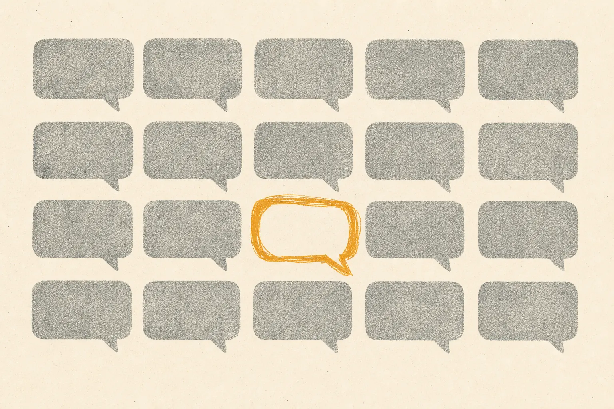

为什么 AI 内容听起来都一样，以及如何摆脱

AI 内容听起来都一样，是因为大多数团队给模型的东西都一样：模糊的语气形容词、热门形式，而没有受众证据。模型就用它最可能的默认设置来填补空白。要摆脱同质化，就要改变输入：成文的语调、精选的示例，以及从真实对话中收集的、受众实际使用的具体语言和冲突点。
AI 同质化是什么样子的？
刷信息流时一看便知。以反问句开头的帖子。恰好列出三个好处的清单。以一句工整的道理收尾的段落。结尾一句邀请您在下方分享想法。这些都没有错，但全都可以互换。
我们对品牌差异化的社媒聆听反复回到同一个冲突点：身处饱和品类的营销人担心 AI 生成的内容让所有人听起来都一样，而条件反射式的应对是打折，而不是传达价值。当您的文字泯然众人，价格就成了唯一可以竞争的东西。
为什么模型会趋向同一种语调？
语言模型预测的是可能出现的文本。给它一条单薄的提示词，最可能出现的文本就是与它在该文体中见过的其他一切最相似的文本。三种力量会放大这一点：
- 单薄的简报。“写一篇关于我们新功能的、吸引人的 LinkedIn 帖子”没有给模型任何能把您区分开来的东西。
- 借来的形式。团队照搬本周热门形式时，也照搬了它的节奏和结构。
- 轻度编辑。在产量压力下，编辑修正了错误却保留了默认设置，于是品牌风格慢慢变成了模型风格。
2020 年我们就见过这种情况的温和版本。除非示例把它引向别处，否则 GPT-3 在某一文体中的输出往往会趋向同样的措辞。不同之处在于规模：那时只有有限的团队能使用 API；自 2022 年 11 月 ChatGPT 推出以来，几乎人人都能用了。
如何在自己的内容中诊断它？
换标测试
拿十篇近期内容，把您的品牌名换成竞争对手的。如果内容读起来依然自然，说明语调没有发挥任何作用。
说法普查
列出您最近三十条帖子的开头句和结尾句。统计重复和近乎重复的情况。一簇簇相同的写法，正是模型默认行为留下的指纹。
受众镜像
把您的词汇与受众谈论您所解决问题时使用的词汇进行比较。如果您说“无缝解决方案”，而他们说“我只想让它别再出故障”，那就存在差距。找到这种语言正是面向品牌的 SOMIN 的用途：AI 受众研究平台 SOMIN 从真实帖子中解读语气、情绪和冲突点。
这三项测试构成了我们品牌语调审计的核心。
如何摆脱它？
1. 把只有您才会说的话固化成规
一套语调体系应当包括品牌从不说的话、品牌专属的词，以及几个标志性的写法：也许您总是先从顾客的处境说起，或者从不使用感叹号。这类规则足够具体，模型能够遵循，读者也能察觉。
2. 给模型输入您的受众，而不是整个互联网
简报应当承载受众证据：真实的说法、购买背后的冲突点、人们在评论中提出的异议。模型的默认设置是互联网的平均水平；您的简报需要聚焦于您所在的那个特定角落。我们的姊妹品牌 Mindfuse 正是出于这个原因，深入研究冲突点和文化符码。
3. 叙事胜过热点
热门形式只能短暂吸引注意力，却永远建立不了身份。用一种辨识度高的语调讲述的一致叙事，则会不断累积价值。我们在为什么真实比潮流更持久中对此有进一步阐述。
4. 为语调而编辑，而不只是为纠错而编辑
在语法检查之外，再给编辑一份语调检查清单，并授权他们否决那些正确却面目模糊的草稿。
检查清单：同质化警示信号
- 以提问或“在一个……的世界里”开头
- 清单总是三项
- 靠抽象名词撑场面：解决方案、旅程、生态系统
- 段落结尾讲道理
- 千篇一律的评论号召
- 没有一句顾客真正会说的话
一个实例
一个 B2B 软件品牌写道：“借助我们强大的全新仪表板，体验无缝协作。”受众研究显示，用户用自己的话抱怨：周一开会前为了一个数字要追着三个人要。改写后：“一个数字，周一前到手，不用追着三个人要。”功能还是同一个。一个版本可能属于任何人；另一个只可能属于他们，因为它借用了受众自己的不满。
这次改写不需要更好的模型，需要的是更好的证据。SOMIN 的代理商案例研究是有用的延伸阅读，讲述代理商如何利用受众洞察来塑造创意方向。
定义
- AI 同质化：品牌内容向模型默认设置趋同，导致各品牌难以区分。
- 语调体系：让品牌写作具有辨识度的规则、示例和词汇，同时为人和模型而写。
- 受众语言：从真实对话中收集的、顾客自己使用的词语和表述方式。
要点
问题不在模型，而在被平均化的输入。GPT3 Marketing 自 2020 年起就在用这些系统写作，这一规律始终成立：输入越具体，输出越独特。有了技术合作伙伴 SOMIN，这些具体细节来自您的受众，而不是我们的猜测。
这周您应该做什么？
从小处着手。对十条帖子做换标测试，写下您最常用的三种开头，并收集十个顾客谈论您所解决问题时真正使用的说法。这三份清单能告诉您的同质化问题，比任何工具对比都多。然后定下一条从周一开始执行的规则，比如不用反问句开头，看看读者是否注意到了不同。
常见问题
为什么 AI 生成的内容听起来千篇一律？
模型返回的是提示词最可能的延续。模糊的提示词、千篇一律的示例和大家共用的热门形式，把每个品牌都推向同一个可能性中心，于是输出趋同。
您能在自己的内容中发现 AI 同质化吗？
能。把您的标志换成竞争对手的，再读一遍。如果没有任何违和感，说明语调千篇一律。反复出现的开头、三项式清单和套路化的结尾提问都是常见迹象。
换一个模型能解决同质化吗？
很少能长久解决。每个模型都有自己的默认设置，换模型只是把一种固定风格换成另一种。独特性来自您的输入：语调规则、示例和受众证据。
预约品牌语调审计
自 2020 年 GPT-3 API 开放的那个夏天起，我们就一直在用语言模型写作。我们打造品牌语调体系、提示词库和人工编辑的内容运营，以您的真实受众的反应为依据。
发送邮件至 ask@gpt3.marketing →